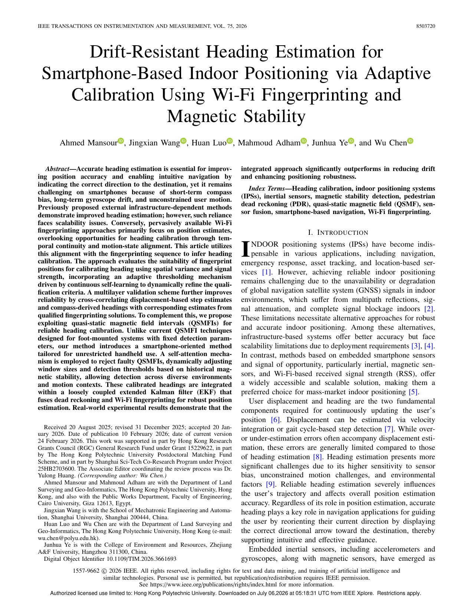

Drift-Resistant Heading Estimation for Smartphone-Based Indoor Positioning via Adaptive Calibration Using Wi-Fi Fingerprinting and Magnetic Stability
Paper preview

Research story and quick reading guide
This paper addresses a central weakness of smartphone-based pedestrian navigation: heading drift. PDR depends strongly on heading, because even small direction errors can accumulate into large position errors over time. Smartphones make this problem difficult because their gyroscopes drift, compasses can be biased by magnetic disturbance, and users carry devices in unconstrained ways. Many methods improve heading by using external infrastructure or carefully controlled conditions, but those assumptions conflict with scalable IPS deployment. This paper therefore asks whether heading can be calibrated using resources that are already pervasive in indoor environments.
The key insight is that Wi-Fi fingerprinting provides more than position estimates. When fingerprint positions evolve over time, their spatial continuity can reveal whether the user’s motion direction is plausible. Magnetic measurements can also provide stability cues, although they must be handled carefully because indoor magnetic fields may be disturbed. The proposed approach combines these two forms of information to evaluate when fingerprint-derived positions are suitable for heading calibration. In this way, Wi-Fi and magnetic stability become a reliability layer for heading correction.
The story can be visualized as inertial heading → drift risk → Wi-Fi trajectory evidence + magnetic stability → adaptive calibration → improved navigation. This flow is important because it shows how the paper transforms positioning information into a heading-quality resource. Rather than separating localization and heading estimation, the paper links them through temporal alignment and motion-state consistency.
The method uses adaptive qualification rather than a fixed rule. This is important because indoor environments are not uniform. Some areas provide stable fingerprints and useful displacement information; others may be ambiguous or noisy. By learning and refining qualification thresholds, the system can decide when calibration is trustworthy. A multilayer validation process further protects the heading estimate by checking consistency among displacement, steps, compass-derived direction, and fingerprint movement.
The paper matters because it improves the deployment realism of smartphone PDR. It does not require dense new infrastructure and does not assume that the phone is always held in a fixed pose. It uses existing Wi-Fi and magnetic information to reduce heading drift in a way that is aligned with practical IPS operation. For readers, the paper provides a useful example of how fingerprinting can support navigation beyond direct coordinate estimation.
This work should be cited when discussing smartphone heading estimation, PDR drift mitigation, Wi-Fi-aided inertial navigation, adaptive heading calibration, magnetic stability analysis, and robust indoor pedestrian navigation under realistic smartphone use.
Extended summary
This paper introduces an adaptive heading-calibration method that uses Wi-Fi fingerprinting continuity and magnetic stability to reduce smartphone heading drift for indoor positioning and navigation.
Key visual explanation
These selected visuals help readers understand the method quickly before reading the full paper.

When to cite this paper
- smartphone heading drift is discussed in PDR or indoor navigation
- Wi-Fi fingerprinting is used beyond position estimation for heading calibration
- magnetic stability and adaptive thresholds are used for reliability control
- deployment-ready smartphone positioning requires drift-resistant orientation estimation
Keywords
heading estimationsmartphone indoor positioningWi-Fi fingerprintingmagnetic stabilityadaptive calibrationPDRsensor fusion
Official link
https://doi.org/10.1109/TIM.2026.3661693
For publisher-restricted articles, link to the DOI or an allowed accepted manuscript rather than uploading a restricted PDF.
BibTeX
@article{Mansour2026driftresistant,
title = {Drift-Resistant Heading Estimation for Smartphone-Based Indoor Positioning via Adaptive Calibration Using Wi-Fi Fingerprinting and Magnetic Stability},
author = {Ahmed Mansour and Jingxian Wang and Huan Luo and Mahmoud Adham and Junhua Ye and Wu Chen},
year = {2026},
journal = {IEEE Transactions on Instrumentation and Measurement},
doi = {10.1109/TIM.2026.3661693},
}